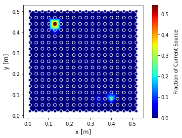
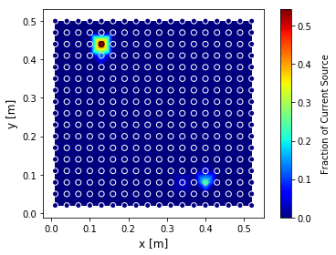

The Mise-à-la-masse method
Background
The Mise-à-la-masse (MALM) method is a variation of the classical electrical tomography map, for which the current is injected into the ground by two electrodes of contrary sign and the potential is measured between two mobile points.
MALM implementation is based on three assumptions:
the electrical conductivity of the root system body should be enough high to flow the current;
the conductor core should be continuous
and already located or exposed
The MALM forward operator
For a 3-D, isotropic electrical-conductivity distribution, \(\sigma(r)\), the electric potential, \(V(r)\), at a point r due to a single current electrode, idealized as a point source at the origin with strength I, is defined by the Poisson equation:
subject to the condition:
at the ground surface and the condition
at other, infinite boundaries; with \(\varsigma\) the Dirac delta function and n the outward normal.
where \(\sigma\) is the conductivity of the medium, here assumed to be defined by the conductivity distribution. The latest is in general obtained from an Electrical Resistivity Tomography (ERT) data inversion.
Green functions simulation
The first step consist in using Eq.[eq:PoissonEq] in order to forward simulate the voltage distribution generated by individual point current sources placed in the medium, each representing the possible location of current released.
In order to distinguish between the active sources used during the prospection and the current sources used to generate the green functions the latest are usually called virtual sources (VRTs).
The current Sources can be distributed on a regular grid of virtual electrodes (VRTe) or an unstructured one. We hypothesized that the number of locations for current sources, should be distributed in space considering the prospection geometry i.e. the spatial distribution (control by the distance between the electrode) and coverage.
The MALM forward simulation takes into account the electrical conductivity \(\sigma\) distribution generally known after ERT inversion.
Problem linearisation
The iCSD inversion that we propose here takes advantage of the physics of the problem (i.e.,linearity and charge conservation) to decompose the investigated CSD into the sum of point current sources. For linearity, the potential field of multiple current sources is the sum of their potential fields: the measured \(\Delta\)V can be viewed as, and decomposed into, the sum of multiple \(\Delta\) V due to a set of possible current sources :raw-latex:`\cite{LucaPlantAndSoil}`. Let’s then assume, a linear system of equations linking data and model for potential fields:
Where \(\textbf{b}\) is a vector containing the measured sequence of resistance. \(\textbf{A}\) is the source kernel matrix, its columns are the simulated VRTe R sequences;and x is the source model, a vector containing the unknown VRTe weights; Each row in A corresponds to the relative R in the acquisition sequence, e.g., \(\textbf{A}_{1,1}\) is the first resistance extracted from the potential field simulated with injection at the first VRTe.
Including Constraints
The charge conservation is implemented by appending a row of 1’s to \(\textbf{A}\) and a corresponding 1 to the vector \(\textbf{b}\). This forces the sum of the VRTe weights to be equal to 1.
More in including constrainst in Menke W (1989) geophysical data analysis: discrete inverse theory. International Geophysics Series. Academic Press, New York.
Problem regularisation
Data regularisation
In the algoritm current state the observations data can be weigted in three different ways for which the weighted \(W_{d}\) is equal to:
a constant vector;
the inverse of the square of the observed resistances \(1/\sqrt{d}\);
the inverse of the error from the reciprocal measurements \(1/\sqrt{Err_{rec}}\) (NOT YET IMPLEMENTED);
Model regularisation
Prior informations
The initial model \(\textbf{m}_{0}\) vector is implemented using the simple misfit between a single source current and the measured data:
The goal of this step is to select “plausible” locations of current release, to be then used as starting points for a regularized search of the overall sources distribution (see step below). Each single current location is given a score (named F1) depending on how well that single source manages, alone, to explain the entire observed MALM voltage distribution. Other approaches can be considered as a 1st attempt to describe regions of influences without having to go trough a complete inversion (see sect. ).
Depth weighting function
As for imaging methods, inversion methods also assume, inherently or explicitly, a depth weighting function.
Additional weightings can also be incorporated through, such as depth weighting, which is important in potential field inversions (such as magnetics and gravity), or sensitivity weightings to prevent model structure from concentrating close to sources or receivers (Li and Oldenburg, 1996a, Li and Oldenburg, 2000c).
A depth weighting matrix is generally applied to the kernel during inversion to counteract the sensitivity of the kernel matrix to near surface model parameters
cite Zhenlu Shao, Revil 2018
Compactness
Compactness or minimum support (MS) method (Zhdanov and Tolstaya, 2004) is a constraints to reach a compact source current density.
Spatial regularization
For the 2d case, since the problem is undetermined a first order spatial regularization is added (Menke, 1989). Rows are added to express the differences between adjacent VRTe, e.g., the row \(\left[\begin{matrix}1&-1&\ldots\\\end{matrix}\right]\)is the difference between the first two VRTe weights. The differences are added for the entire VRTe grid and set to 0 by adding corresponding 0’s to b.
NEW: a second order spatial regularization with differentiation between x and y directions to obtain two different matrices (of the same size) such as \(D_{x}\) and \(D_{y}\)
NEW: for the 3d case, a k-mean with 4 (or more) neighbors sources regularization can be used. In that case each source is weighted so the sum is equal to 0.
We used a linear solver from Python library, using a least square inversion which in the current version minimized the following objective function:
where \(\textbf{m}_{0}\) is a reference model to which we believe the physical property distribution should be close. Often \(\textbf{m}_{0}\) is chosen to be a constant average value. In that case the initial model \(\textbf{m}_{0}\) vector is implemented using the simple misfit between a single source current and the measured data:
Equation [eq:ObjFctFull] also contains the coefficients controlling weight of the relative smallness \(\alpha_{s}\), and the regularization anisotropy wieigth \(\alpha_{x}\) and \(\alpha_{y}\)respectively in x and y directions.
from icsd3d_class import iCSD3d_Class as i3d
[...]
# use relative smallness model reg
id3d.x0_prior=True
id3d.alphax0=1 # weight of relative smallness
# use anisotropic smoothing regularisation fct
id3d.alphaSxy=True
id3d.alphaSx=1 # x-smooth
id3d.alphaSy=1 # y-smooth
Equation [eq:ObjFctFull] can be rewritten as:
Where
Luca’s version: \(W_m\)=1st order spatial regularisation (-1,1))
New version: \(W_{m}=\alpha_{s}I+{D_{x}}^{T} D_{x} +D_{z}^{T}D_{z}\)
(See regularisation class fiatando code for in depth understanding)
The trade-off between data misfit and solution regularization is controlled by \(\lambda\). The numerical routine includes a “pareto” functionality wherein regularization and model-to-measurement fit are traded off while changing the regularization weight. The obtained set of solutions can be used to construct the “pareto front” (L-curve), which is a widely accepted way to estimate the optimum regularization weight :raw-latex:`\cite{hansen1993insect}`.
The solution is further constrained by forcing the linear solver to seek only positive VRTe weights (i.e., inequality constraint), as the negative source of current is known to correspond uniquely to the return electrode. The following equation can be use to solve the inversion problem:
by solving the system Am=b, with:
Model appraisal
TO WRITE
Other approaches
The product-moment correlation
Rather than approach the measure of misfit between the model and the data in terms of a least squares fit, the correlation of data to model may be used. The product-moment correlation is expressed here as:
where \(D_{i}\) is the \(i^{th}\) measured transfer resistance and \(F_{i}(I_{k})\) is the \(i^{th}\) transfer resistance computed to unit current at location k.
:raw-latex:`\cite{binley1997detecting}`
API exemple of the use of product-moment correlation apply to a synthetic test.
from icsd3d_class import iCSD3d_Class as i3d
import pyvista as pv
icsd3d_SensApriori=i3d(dirName=path2files)
icsd3d_SensApriori.type='3d'
icsd3d_SensApriori.sim='SIM_sens3d.txt'
icsd3d_SensApriori.obs='OBS_sens3d.txt'
icsd3d_SensApriori.showResultsFini(method='Pearson')
 

Imaging methods derived from gravity methods
We describe here approaches than can help to interpret the mise-à-la-masse prospection. At most, they indicate an approximate source location. It is crucial to remember that these solutions are subject to non uniqueness and bias just like any other geophysical inverse problem.
The voltage as a potential in resistivity methods is actually a pseudo-potential since it is modulated by the conductivity. If the conductivity is homogeneous (case where CT=1, in figure 1), the partial differential equation (PDE) that is regulating the flux of current in steady state (DC), boils down to Laplace’s equation because the conductivity goes out from the derivative.
In steady state, we introduced the governing equations for the direct current problem (i.e. Poisson equation, Eq. [eq:PoissonEq]).
Poisson’s Equation simplifies to Laplace’s Equation. If there is no current sources into the soil:
If on the other hand there is a particule of mass m into the soil and in particular, if we consider it to be at the center of a sphere of radius r, the Laplace equation for the gravitational potential becomes:
With \(\sigma\) the density of the mass and where \(\gamma\) is the gravitational constant (eq. 2.10 of Applied Geophysics book).
Ultimately, we get a similar equation than for pure potential methods (like gravity of magnetism) if we consider a charge of current instead of a particle of mass.
Imaging methods may be defined in terms of the self-adjoint operator GT only [18], leading to some sort of approximation of the inversion approach.
As first observed in [17] and [18], \(\textbf{G}^{T}\) is the upward continuation operator.
[17] M. Fedi and M. Pilkington, “Understanding imaging methods for potential field data,” Geophysics, vol. 77, no. 1, pp. G13–G24, 2012. M. S. Zhdanov, Inverse Theory and Applications in Geophysics, 2nd ed. Amsterdam, The Netherlands: Elsevier, 2015.
A number of imaging methods rely on the use of upward continuation operator and a depth weigting functions in order to provide an estimate of the source depth causing the potential field. The most common are:
Euler deconvolution;
dEXP, Sandwich, Migrate …;
CWT: continuous wavelets transformations.
cite paper in prep: “The dEXP and wawelets algorithm applied to current source inversion for Mise-à-la-masse prospection”
Continuous wavelets transformation
See Manual G. Mauri